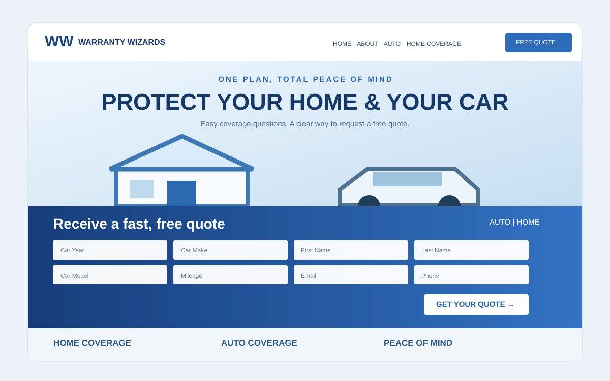
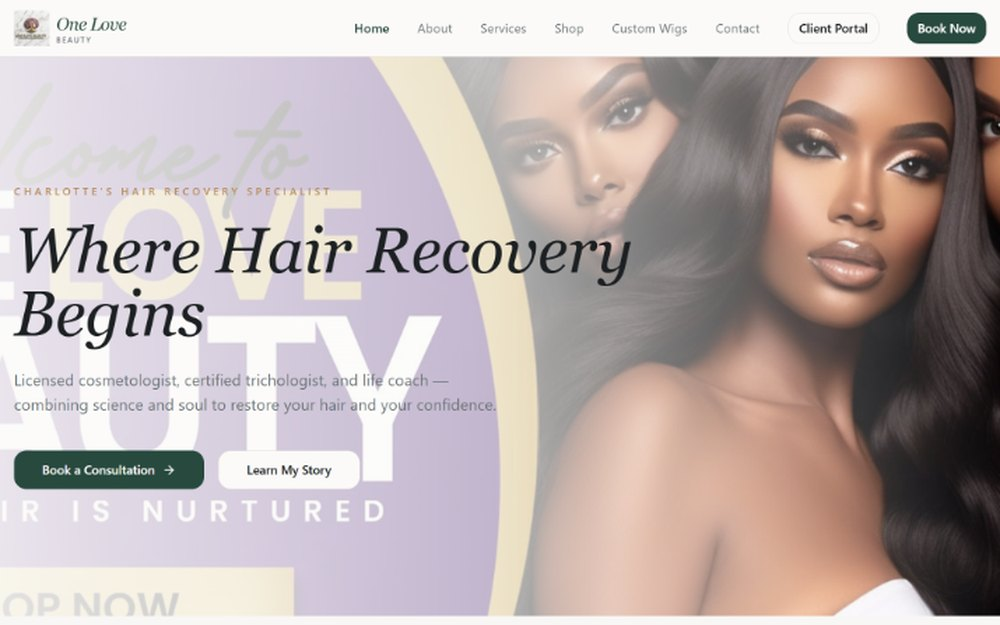
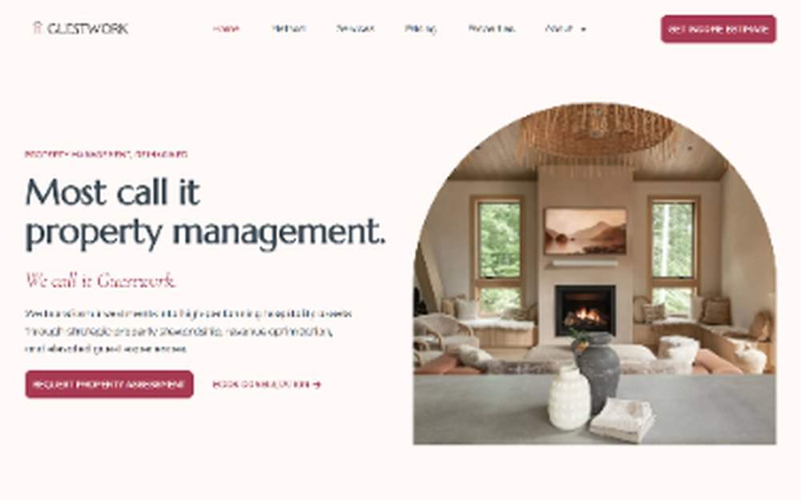
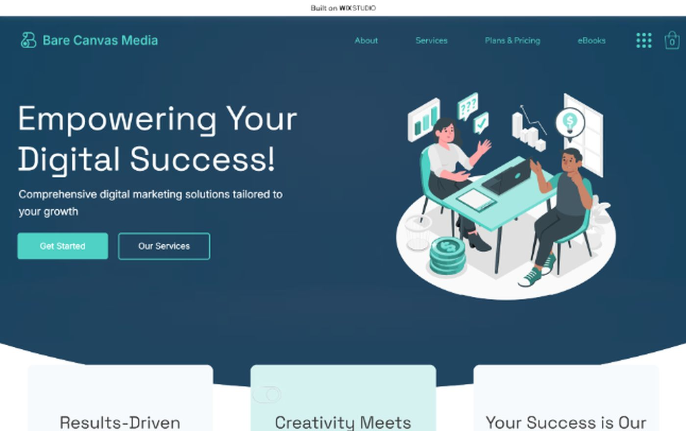
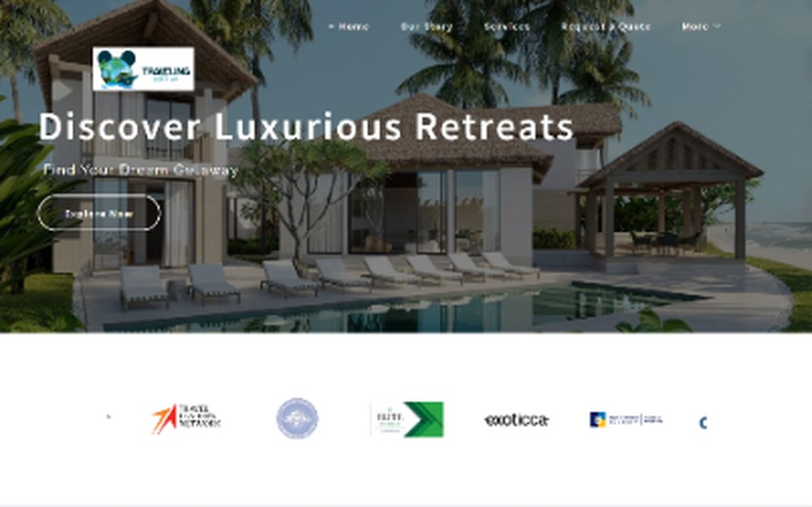
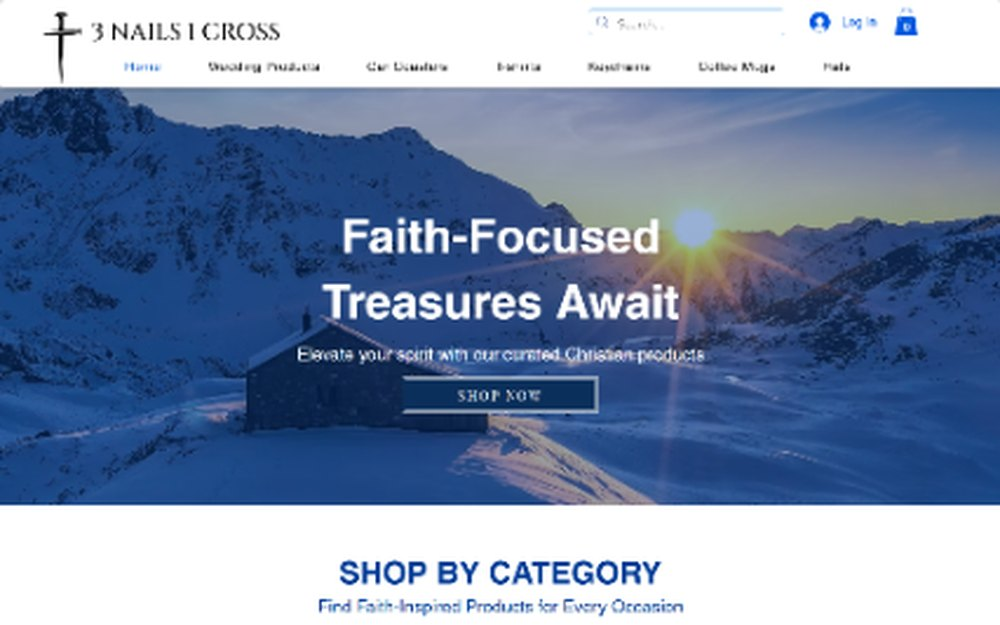
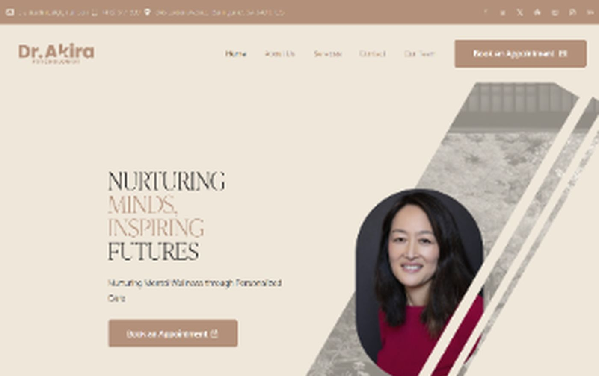
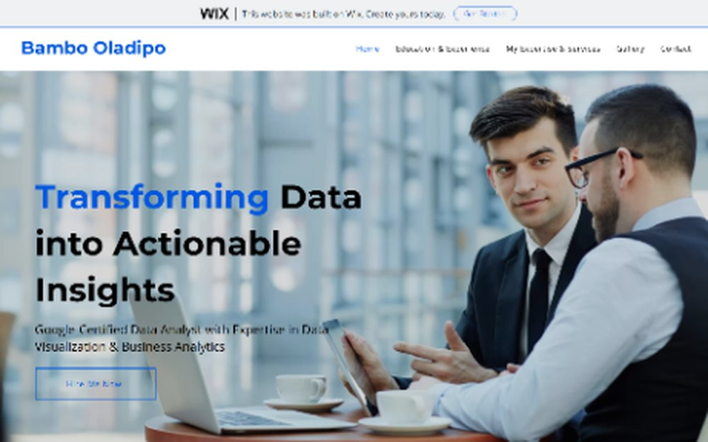

Website Design
Clear websites that help people take action.
Website servicesWebsites · systems · digital products
Simple design. Smart tools. Built for your business.

Behind the brand
I'm Olalekan Oyekunle, also known as Oyeola. After working with more than 70 people through Fiverr, losing my place on the platform pushed me to build something of my own.
Read why I started Oyeola Web ↗Services
Clear websites that help people take action.
Website servicesKeep work and updates in one place.
Operations servicesEasy-to-use planners made for your customers.
Planner servicesFull websites you can open
Explore six complete websites across very different industries.


Selected work
Real projects you can explore.

A strong basketball training story, from the coaching philosophy to membership and applications.
Read the project story ↗
A brighter shopping journey built around pet-care needs, category discovery and confidence.
Read the project story ↗
A blue-and-white home and auto warranty quote page focused on clarity and trust.
Read the design story ↗
A direct-booking holiday stay experience built around confidence and availability.
View project
A clearer route from service discovery to booking.
View project
A simpler consultation journey for rental owners.
View project
A stronger offer hierarchy with a more distinctive visual system.
View project
Travel discovery connected to a practical next step.
View project
Product discovery connected to the brand story.
View project
Authority, services and appointments in one calm path.
View project
A clearer professional story and contact path.
View project
Website signals made easier to inspect together.
View project
A 60-page hyperlinked planner with a protected sample.
View projectVerified feedback
Feedback from real projects.
“Everything was designed exactly how I wanted, and the planner is not only beautiful but also functional and easy to use. I really appreciate the attention to detail and how well he understood my vision. I’m very happy with the final result.”
“Definitely better than what I had pictured to get on Joomla. The previous developer was complicating things and we had been spending a lot of time on the project. Thank you for really helping me out.”
“The portfolio addition fits the website very well and feels like it was part of the original design. The layout is clean, the project presentation is professional, and the same style was kept across the site.”
Start a project